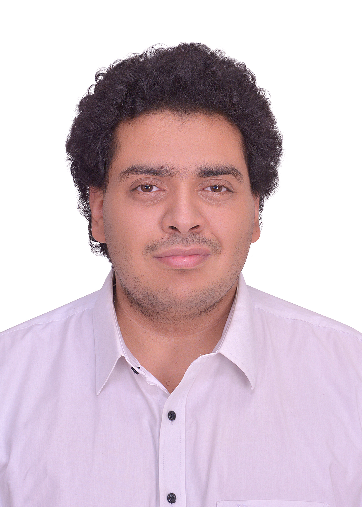

About Me

A hand-on learner with strategic thinking abilities and a never ending thirst for knowledge, driven by results and never satisfied by anything less than perfect. I’m currently seeking a career in project management, or account management where I can capitalize on my critical thinking, creativity, communication skills and team-work abilities. Having Learned from my life experience and extracurricular activities helped me to refine my personal skills.
I'm also currently studying to get my PMP certificate
Languages
- Arabic - Native
- English - Fluent
- French - Good
Skills
- Microsoft Office
- Project Management
- Creativity
- Problem Solving
- Critical thinking and Planning
- Video Editing
Education
2012
High School National Degree "Thanaweya Amma" - College De La Salle - Daher
2018
IELTS - Score 7.5/9
2021
Bachelor's Degree in Commerce and Marketing - Metropolitan University in Budapest (METU)
Work Experience
Neon for Advertising and Technology
Account Manager & Project Manager
2021 - Present
- Served as liaison between NEON and its customers in the different fields of services NEON offers (Social Media Marketing, Media Production, and mainly Software development.)
- Develop and manage a detailed project schedule and work plan.
- Predict resources needed to reach objectives and manage resources in an effective and efficient manner.
- Utilize industry best practices, techniques, and standards throughout entire project execution
- Measure project performance to identify areas for improvement
- Negotiated contract renewals between NEON and its customers in the different fields.
- Communicated the customers’ needs via briefs and in a timely manner, as well as communicated the progress of projects to the clients on a consistent basis.
- Prepared and presented reports on accounts status
- Assisted with clients requests and issues.
- Built a strong trusted advisor relationship with clients
- Developed new plans and business opportunities with existing clients and potential clients.
- Responsible for planning and overseeing projects to ensure they are completed in a timely fashion and within budget.
- Responsible for planning and designating project resources, preparing budgets, monitoring progress, and keeping stakeholders informed the entire way. This is all done within the confines of NEON's goals and vision.
Human Resources Manager
2021 - Present
- Developed and implemented HR strategies and Initiatives
- Served as a communication chanel between management and employees by addressing concerns, demands, and other issues.
- Created a positive work environment by managing monthly gatherings, activities, and team building strategies for all employees and management.
- Conducted quarterly and annual appraisals, and one-on-one meetings with each individual to better understand their needs and concers, and help building a future vision and plan to what needs to be done aligning with the overall business strategy.
- Created and Implemented KPIs for each employee according to their job description, collaboration, productivity, and suiting their work rate
Freelance
2016 - Present
- Video editing for the Focolare movement in Egypt (church based activity) to capture key moments in their activities (16 - Present)
- Game planning and trials for Gazef (treasure hunts and murder mysteries through the city of Cairo) (16-17)
- Translation (English-Arabic, Arabic-English, French-English, and French-Arabic) through Upwork (18-22)
- Wall drawings and painting (18 – Present)
- Created, organized and executed team building activities and games for Neon advertising agency (20-Present)
- Social Media Marketing for Talaat Dawoud (Lawyer) using Facebook, Instagram, Tiktok, and YouTube (Dec 22 – Feb 23)
Extracurricular Activities
MEJ (mouvement Eucharistique Des Jeunes)
2009 - 2017
- Guiding and empowering teams of teenagers and pre-adults
- Tailoring annual programs and camps for leaders focusing on becoming successful, selfless, dynamic, more mindful, ethical, more creative and enhance their sense of responsibility and being more resourceful to ensure they can deal with the younger generations
- Budgeting camps and events for the last 3 years
- Organized with several teams 4-8 annual events between 2013 and 2017 , planned and managed 4 of them (2 events and 2 camps)
Focolare Movement
2010 - Present
- Guided and empowered teams of kids (4-10 years old) for 3 years, focusing on teaching them ethics and values
- Guided and empowered teams of young teenagers (10-14 years old) for 2 years, focusing on teaching them values, how to deal with their changing worlds, and resourcefulness
- Currently leading a team of young adults (18-22 years old) with our main focus being their well-being and how to be more focused on their futures.
- Organized with several teams 2 major annual events for the last 12 years, planned and managed 3 of them
- Budgeting camps and events for 2 years (roles rotation)
- Served as the responsible for all sound system equipment (microphones, mixers, data show, speakers and cables), including inventory check-up, maintenance, connections, and assembly and re-assembly of equipment